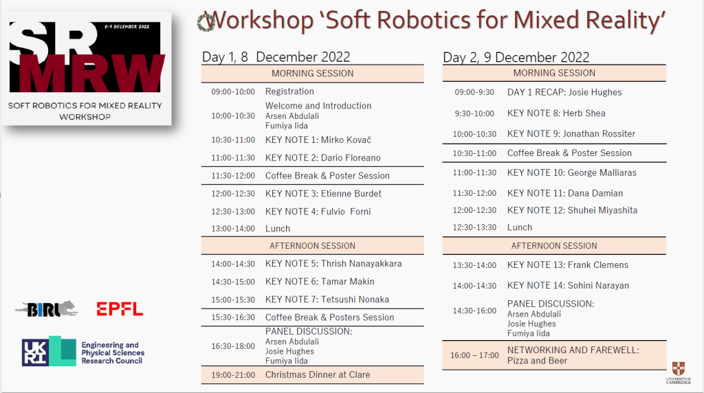
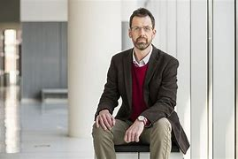
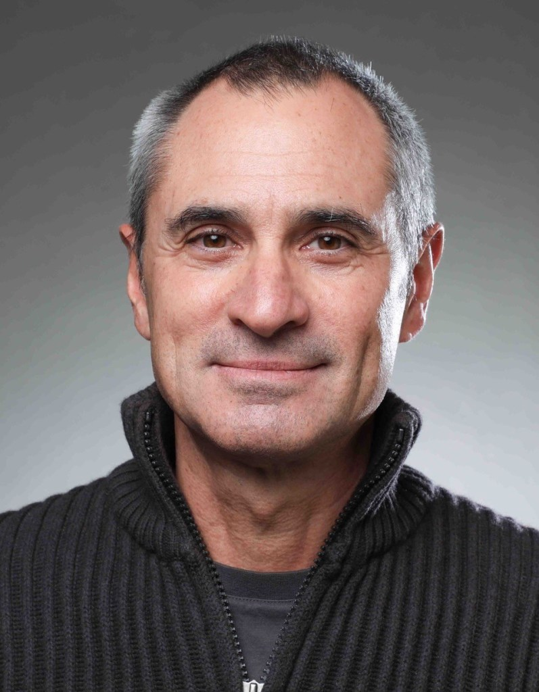
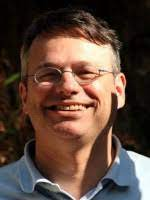
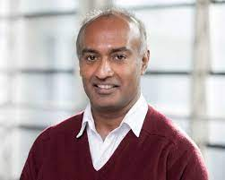
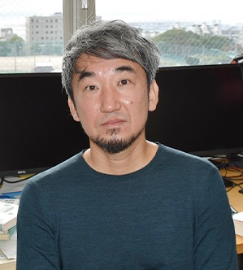
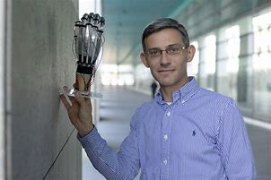
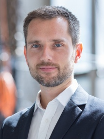
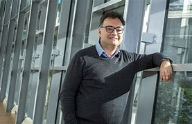
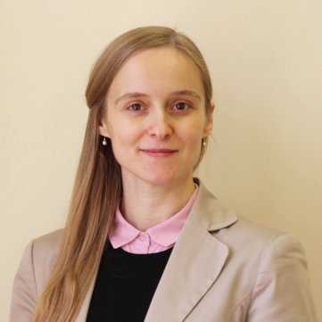

EPSRC Workshop on Soft Robotics for Mixed Reality, 8-9 December 2022
Archived project or event page. Dates and roles describe the original activity.
WORKSHOP PROGRAMME
Soft robotics is an emerging field that complements traditional robotics with a flexible structure that simplifies interaction with complex environments due to an excessive degree of freedom.
During the past decade, the research primarily was focusing on the development of stand-alone soft robots. Recently, soft robotics techniques have been found useful as an interface for interaction with Virtual and Mixed realities.
We decided to explore Embodied Intelligence in the design of soft interfaces including human factors. The purpose of this workshop is to establish collaboration for exploring different areas of research in EI and Robotics.
Renowned Robotics speakers from the UK and Switzerland will be giving talks on haptic interfaces and wearable robotics.
We would like to invite Ph.D. students and postdoctoral researchers to attend and engage in discussions with the speakers, present their posters and collect constructive comments on their workshop projects.
IF YOU ARE INTERESTED TO JOIN US, PLEASE REGISTER HERE

Invited Speakers









- Jonathan Rossiter, University of Bristol
- Dario Floreano, EPFL
- Etienne Burdet, Imperial College London
- Fulvio Froni, University of Cambridge
- Thrish Nanayakkara, Imperial College London
- Tamar Makin, University of Cambridge
- Tetsushi Nonaka, Kobe University
- Herbert Shea, EPFL
- Mirko Kovač, Imperial College London
- George Malliaras, University of Cambridge
- Dana Damian, University of Sheffield
- Shuhei Miyashita, University of Sheffield
- Frank Clemens, EPFL
- Sohini Kar-Narayan, University of Cambridge
Call for Posters and Poster presentations
There are three poster sessions in total. All poster sessions will be happening during the coffee breaks. The audience will be invited to attend the poster stands during the workshop. All authors should print and bring the poster to the conference venue. The instructions for each session are summarized below.
Organizers
Dr. Arsen Abdulali & Professor Fumiya Iida, University of Cambridge
Dr. Josie Hughes, EPFL, Switzerland
The project is generously supported by the EPSRC (UKRI)
Contact
University of Cambridge
Department of Engineering
Trumpington Street
Cambridge
CB2 1PZ